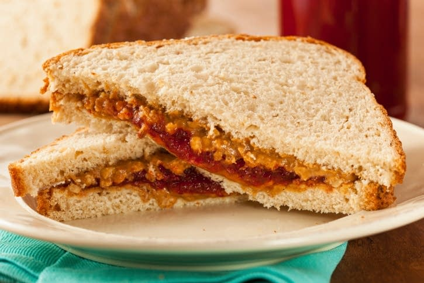

Plain-Belly Peanut Butter And Star-Belly Jelly Sandwich

Description
Luxurious plain-belly peanut Butter along with delicious star-belly jelly to feed
1 hungry peanut butter and jelly lover. Dont forget to make one for a friend!
Ingredients
- 2 slices of your favorite type of bread
- 1 tablespoon peanut butter (creamy or chunky, whichever you prefer)
- 1 tablespoon of your favorite flavor of jelly
Steps
- Spread peanut butter on one slice of bread.
- Spread jelly on the other.
- Place the first slice of bread, peanut butter side down, on top of the jellied slice
- Place the cookie cutter in the center of the bread and press firmly to cut through
both slices of bread. Gently remove the cookie cutter and the star-shaped piece
you've cut out.
Homepage